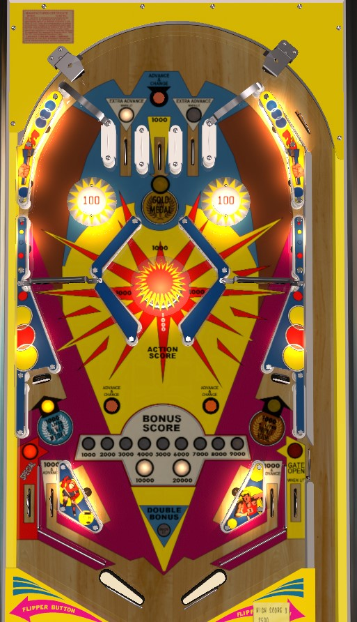

Super Star is the 4 player version. Olympics is the 2 player version. Rules and scoring are identical between the two.
Super Star is not to be confused with Williams' Super Star (1972). Olympics is not to be confused with Gottlieb's Olympics (1962).
Super Star/Olympics is one of the most blatant up-top-all-day games of its era. Shoot the double-wide spinners to get back to the top of the table as much as possible. At first, try to roll through whichever top lane out of the left or right is lit to earn 3 bonus advances; once bonus is maxed at 20,000 points, try to roll through the center lane so that you end up in the middle chamber with the 1,000 point pop bumper. Making the center top lane and hitting both lower standup targets lights the left out lane Special and right out lane gate, but these are more dangerous than they're worth; most drains are center drains.
Super Star has 3 top lanes. Of the outer lanes, one of the two is lit, alternating any time an Advance and Change rollover button is pressed. Unlit top lanes score 0 points and 1 bonus advance; lit top lanes score 0 points and 3 bonus advances. The center top lane scores 1,000 points, lights the Gold medal, and drops the ball into the middle chamber.
Both orbits lead to the top of the table and contain a double-wide spinner that scores 100 points per spin. Shooting these orbits is really the only sensible thing to do with a ball in control on either flipper.
The two upper pop bumpers always score 100 points, and the pop bumper in the chamber always scores 1,000 points. The idea of the chamber is to enter from above, hit the pop bumper a bunch, and come out the bottom. A ball leaving the chamber usually does not get spiked down the center drain, but if you try to shoot into the chamber from below, the return angles are much more dangerous.
The center top lane scores 1,000 points and lights the Gold medal. The standup targets in the lower left and lower right light the Silver and Bronze medals. Lighting all 3 medals lights the Special in the left out lane and opens the gate in the right out lane.
Super Star/Olympics has a conventional in/out lane setup. In lanes score 1,000 points and a bonus advance. Out lanes score 1,000 points. Collecting all 3 medals lights the left out lane for Special and opens a gate in the right out lane. The gate is above the right out lane switch, so you do not get 1,000 points for using the gate.
Bonus is advanced by Advance and Change rollover buttons, in lanes, and the left and right top lanes. The top lane that is lit white (left or right) awards 3 bonus advances instead of 1. Double bonus is awarded on the last ball of the game only; there is no skill-based double bonus award. Max bonus is 2x 20,000 = 40,000 points. There is no bonus holdover or mid-ball bonus collect of any kind.
There is no extra ball feature. Tilt ends the ball in play only.